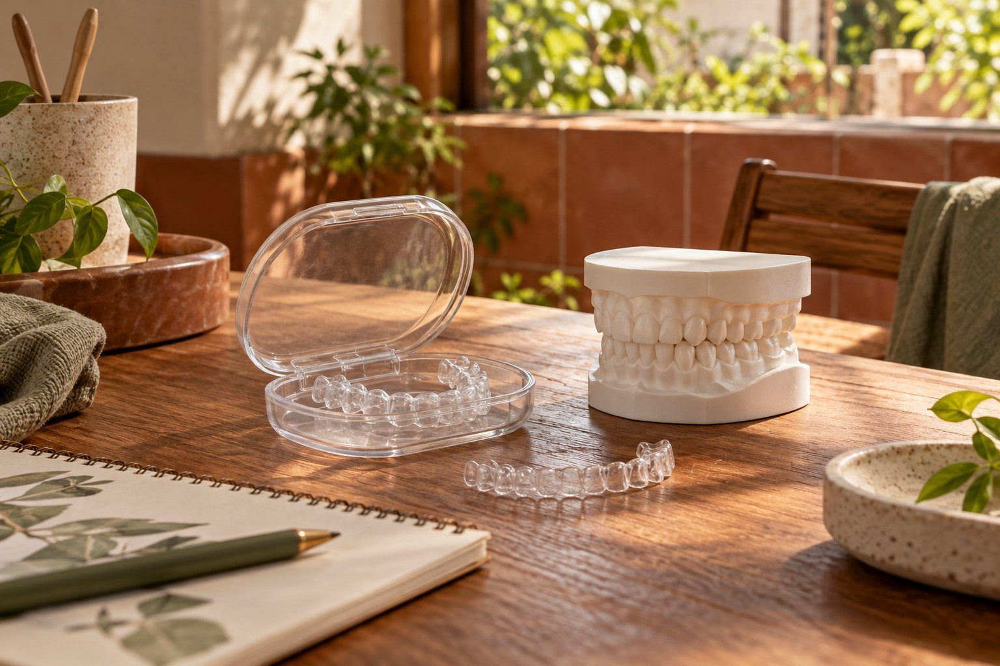
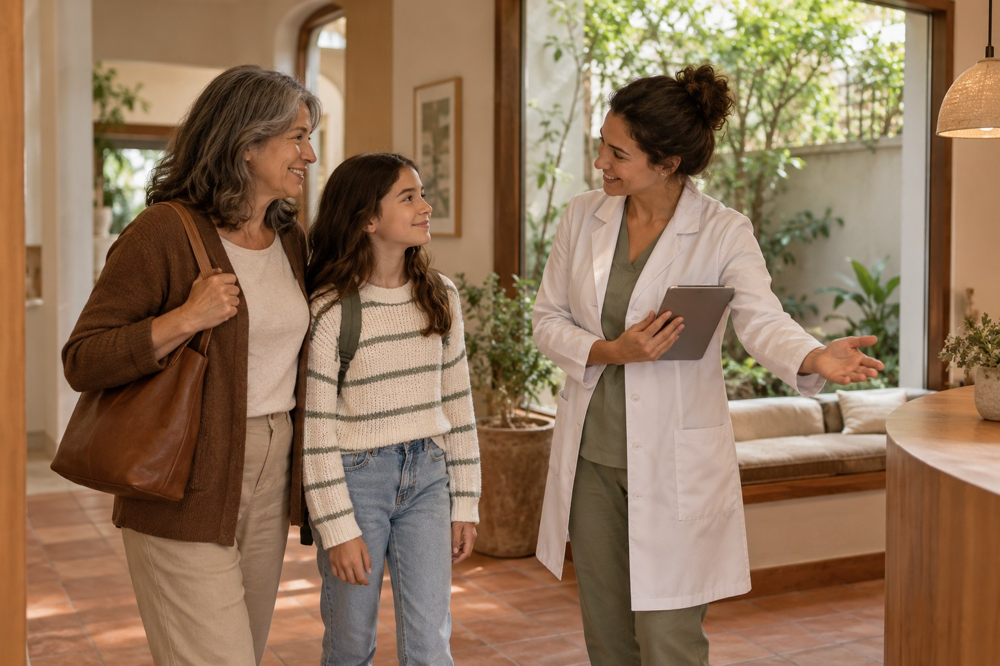

Prevenção e rotina
Avaliação, orientação e acompanhamento para a saúde bucal no dia a dia.
Conhecer o cuidadoConheça as áreas e leve suas perguntas para uma avaliação.
Conheça o cuidado e entenda o que vale perguntar antes de decidir.
Avaliação, orientação e acompanhamento para a saúde bucal no dia a dia.
Conhecer o cuidado
Conhecer alinhamento e mordida para conversar sobre possibilidades individuais.
Conhecer o cuidado
Acolhimento, adaptação e participação da família no primeiro encontro.
Conhecer o cuidadoA proposta demonstrada começa com uma conversa sobre o que você procura, seguida da avaliação e da explicação dos próximos passos. O protocolo real deve ser confirmado com a clínica.
Continuar neste assuntoVocê pode começar descrevendo sua dúvida. A avaliação profissional ajuda a organizar as possibilidades; não é necessário escolher um tratamento pelo site.
Continuar neste assuntoA equipe da clínica deverá informar valores, formas de pagamento e condições antes da contratação. Este catálogo não apresenta preços fictícios.
Continuar neste assunto